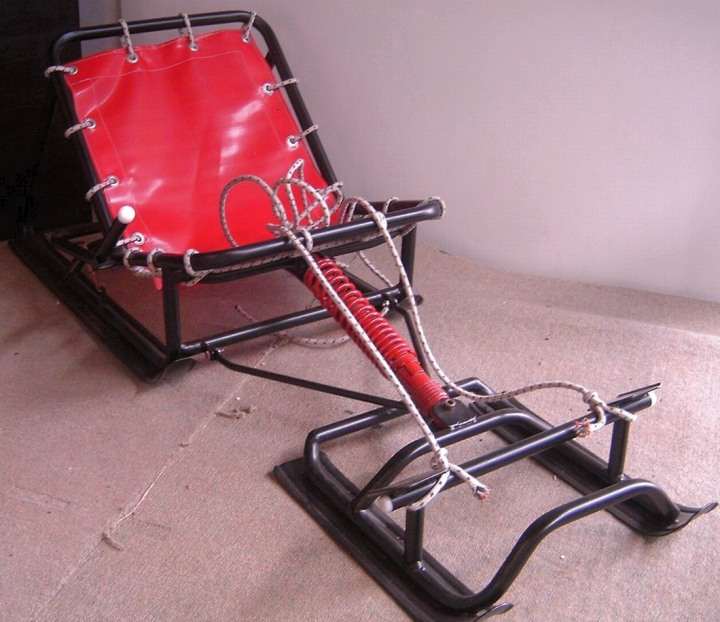

|
ÝTÜ Endüstri Ürünleri Tasarýmý ve Gemi Ýnþa Müh. Bölümleri ortak tasarým ve imalatý olan damla þeklinde orijinal bir deniz bisikleti. Bu bisiklete ait çalýþýr vaziyette bir model de Galata Köprüsü'ne baðlý vaziyette sergilendi; (resimleri büyük görmek için týklayýnýz)
|
|
Damla Bee-Sea-Klet; Deniz Bisikleti
|
|

Amortisörlü
bir kýzak prototipi
VIMANA - Konsept SUV Aracý, Tasarýmcý: Ercan Kaymak
Tasarým Ödülleri Ömer Ünal ve Zafer Uluçay'a verildi:
IDW 2005 Yýlýn Tasarýmý Ödülü ve ETMK ADesign Fair 2005 Yýlýn Genç Tasarýmcýsý Ödülü, 16 Eylül 2005 Cuma akþamý düzenlenen ödül töreni ile sahiplerini buldu.
Soldan saða 3. sýrada Zafer Uluçay, 4. sýrada ise Ömer Ünal görülmektedir. Fotoðraf: Levent Özler
IDW 2005 Yýlýn Tasarýmý Ödülü, Nar Kitaplýk Sehpasý ile u:b studio'dan Ömer Ünal'a verildi. IDW 2005 Yýlýn Tasarým ödülü için deðerlendirme ölçütleri þunlardý: Tasarým konseptinde özgürlük ve yenilikçilik, iþlevsel ve estetik uyum, kullanýcý açýsýndan tasarým çözümünün kalitesi, kendi alanýnda çaðdaþ Türk tasarýmýna yaratýcý bir çözüm veya boyut getirmesi.
Nar Kitaplýk Sehpasý:
"Nar" geleneksel sehpa ve kitaplýk anlayýþýna yeni bir yaklaþýmdýr. Sehpa ve kitaplýðýn fonksiyonlarýný bir araya getirerek pratik bir kullaným biçimi sunmaktadýr.
IDW 2005 Yýlýn Tasarýmý Ödülü, Nar Kitaplýk Sehpasý ile Ömer Ünal'a verildi. Fotoðraf: Levent Özler
Yan yana sýralanmýþ ince metal levhalar "Nar'ýn" iskeletini oluþturmaktadýr. Kitaplar bu levhalara geçirilerek sýrtlarýndan dikey olarak taþýnýr. Bu levhalar bir kitaplýk kadar çok kitabý taþýr ve ayný zamanda kitap ayracý görevi görür.
Ýskeletin ve kitaplarýn üzerinde rahatlýkla kayabilen tepsiler kitaplarý tozdan korur ve "Nar'a" bir sehpa olarak kullaným kazandýrmýþ olur.
Masanýn üzeri onu kullananýn kitaplarý ile dolduðunda obje görünürlüðünü kaybeder ve estetiði kiþiselleþir.
Bunu saðlamak için tasarým ve malzeme seçimleri basit ve fonksiyona yönelik býrakýlmýþtýr.
u:b Studio Hakkýnda: (www.unalmimarlik.com)
u:b studio 2001 yýlýnda Ömer Ünal ve Alper Böler tarafýndan kurulmuþtur. Üretici firmalara geniþ kapsamlý tasarým desteði veren bir firmadýr.
ETMK ADesign Fair 2005 Yýlýn Genç Tasarýmcýsý Ödülü'nü ise ZuluDesign'dan Zafer Uluçay aldý. Zafer Uluçay bu ödüle, tasarým sürecinin baþýndan sonuna izlediði çalýþma yöntemiyle tüm tasarýmcý adaylarýna örnek teþkil etmesine ek olarak, çalýþma verimliliði, azmi ve iþ kalitesinden dolayý layýk görüldü
Ýleriki sayfalarda Zafer Uluçay'ýn bu ödülü almasýný saðlayan çalýþmalarýný detaylý þekilde anlatan ayrý bir yazý bulunmaktadýr.
Ödül kazanan tasarýmcýlar 2006 Milano Design Week için ücretsiz gidiþ dönüþ uçak bileti ve konaklama hakký kazandýlar.
Yönergesi ETMK tarafýndan hazýrlanan yarýþmanýn seçici kurulu; Yýlmaz Zenger, Aldo Cibic, Ýnci Mutlu, Alpay Er, Koray Malhan, Tanju Özelgin, Özlem Yalým, Naz Evyapan ve Ali Bakova'dan oluþuyordu.
Ýlgili haberler:
16-09-2005 > ADesign 2005 Fuarý'nda firmalar, serbest
tasarýmcýlar ve endüstriyel tasarým bölümü son sýnýf öðrencilerinin
tasarlamýþ ve üretmiþ olduðu birçok yeni ve orijinal ürün
sergileniyor:
06-04-2005
> Teknoloji
Holding þirketlerinden T-Design tarafýndan þehir içi ulaþýma
alternatif olarak geliþtirilen Deniz Taksi, Ýstanbul Büyükþehir
Belediyesi'nin sistemi kabul etmesi durumunda 2006'da
hizmet vermeye baþlayacak
|